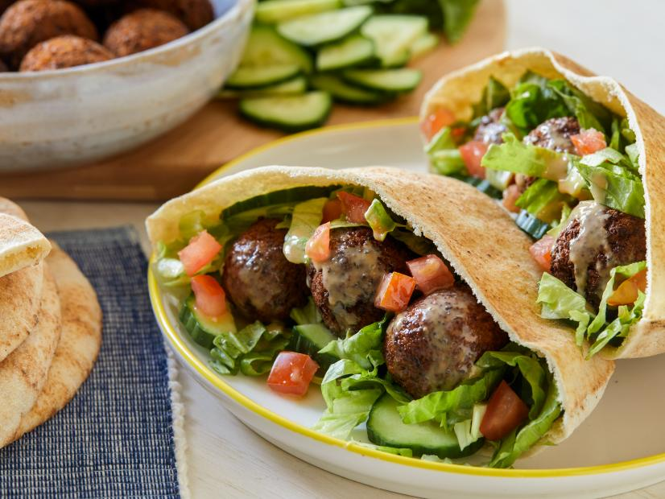

Falafel

Description
Though falafel takes a little planning ahead to soak the chickpeas, it still couldn't be simpler. The fritters come out of the fryer super crisp and perfectly seasoned. Stuffed in a warm pita with lots of veggies, a drizzle of tahini and a dash of hot sauce, they make for a wonderful Middle Eastern weeknight dinner.
Ingredients
- Vegetable oil, for frying
- 8 ounces dried chickpeas, soaked overnight, drained and rinsed
- 3/4 cup fresh parsley leaves
- 1 1/2 teaspoons baking powder dissolved in 3 tablespoons water
- 1 teaspoon ground cumin
- 1/2 teaspoon ground coriander
- 1/8 teaspoon cayenne pepper
- 1 clove garlic, chopped
- 1 small onion, chopped
- Kosher salt
- Serving suggestions: pita bread, lettuce, tomato, tahini, hot sauce and lemon wedges
Directions
- Heat 3 inches oil in large heavy pot to 365 degrees F.
- Add the drained chickpeas to a food processor. Pulse until the chickpeas begin to break down, about 30 seconds. Add the parsley, baking powder and water, cumin, coriander, cayenne, garlic, onion and 2 teaspoons salt. Process continuously, stopping to scrape down the bowl once halfway through, until a homogenous paste forms, about 2 minutes.
- Using a 1-ounce cookie scoop or 2 tablespoons, scoop the falafel mixture into balls and carefully drop one at a time into the hot oil in batches of nine. Fry until very deep golden brown all over, 1 1/2 to 2 minutes. Use a spider or slotted spoon to transfer the falafel to a paper towel-lined plate or wire rack-lined baking sheet to drain. Repeat the process with the remaining mixture.
- Serve the warm falafel with pita bread, lettuce, tomato, tahini, hot sauce and lemon wedges.